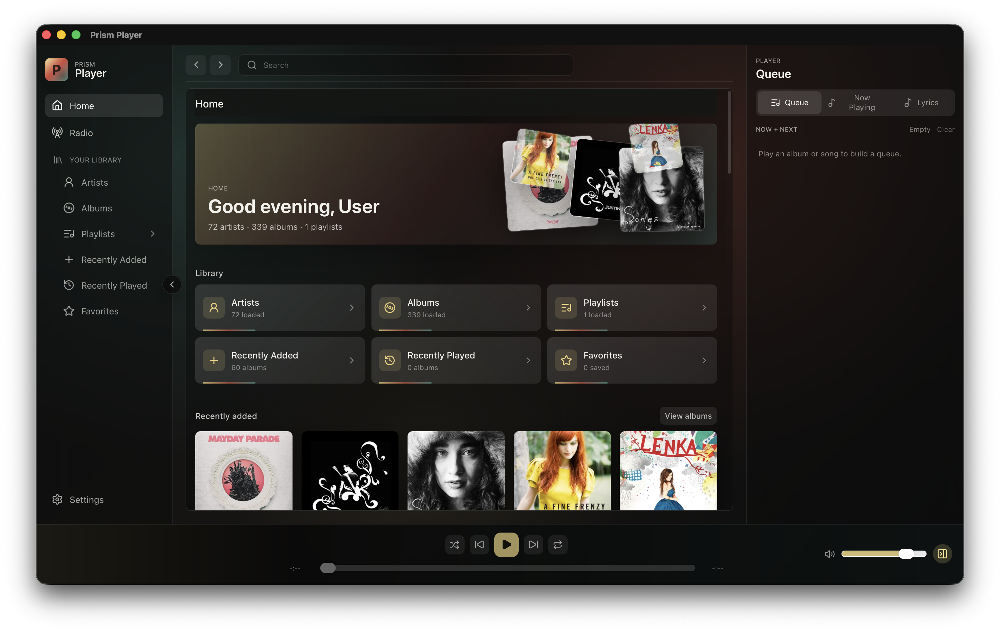
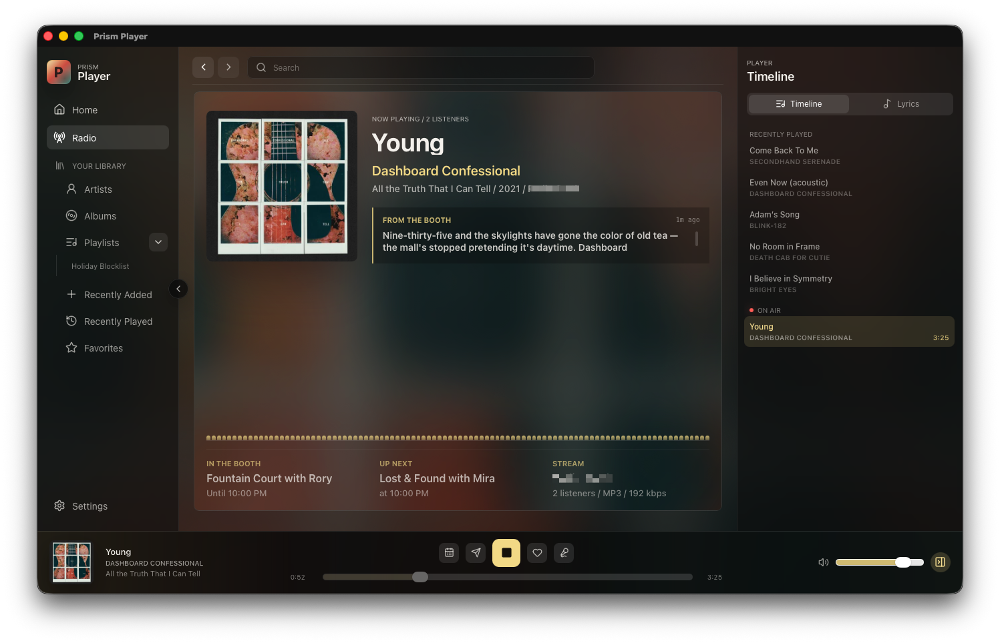

01
Your server, on your desktop
Connect directly to Navidrome or another Subsonic-compatible server. Your library stays where it is.
Prism connects to your Navidrome or Subsonic server for your library, queue, playlists, and radio in one desktop app.

Connect directly to Navidrome or another Subsonic-compatible server. Your library stays where it is.
Browse artists and albums, manage the queue, edit playlists, search your library, and keep lyrics close by.
Use media keys, get native notifications, and pick up where you left off when you switch apps.
Subwave is an AI radio station powered by your own music collection. It runs shows, takes requests, and keeps the music moving.
Prism supports Subwave natively. With a station online, you can tune in alongside your library, open the booth, check the schedule, make requests, and like tracks.
Subwave is an independent project by Perminder Klair. Meet Subwave ↗

Download a build or follow development on GitHub.